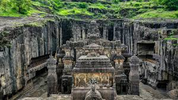

Shaniwar Wada is a historic fort located in Pune. It was built in 1732 and is one of Maharashtra's famous tourist attractions.

A famous monument in Mumbai overlooking the Arabian Sea. It is one of the most popular tourist attractions in Maharashtra.

Ajanta Caves are UNESCO World Heritage Sites known for ancient Buddhist paintings and sculptures.